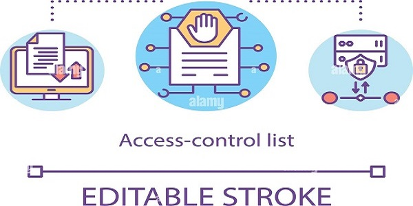

MySql Access Control Lists
Jenis Hak Akses pada MySql dan Contoh Penerapannya
Mysql adalah sebuah sistem manajemen basisdata atau DBMS yang menggunakan perintah dasar SQL (structured query language) untuk mengelola data informasi agar lebih terstruktur dan sistematis
Pada dasarnya untuk mengatur keamanan pada database, maka tiap tiap user harus memiliki akses kontrol terhadap database sesuai dengan porsi user masing masing, baik dibatasi hanya dapat mengakses sebuah database tertentu, tabel tertentu, atau hanya kolom tertentu saja. Pada Mysql terdapat tingkatan level hak akses, seperti hak akses global, hak akses level database, hak akses level table, hak akses level kolom.
Perintah Pemberian Hak Akses (Privileges)
| GRANT jenis_hak ON nama_database.nama_table TO 'user'@'host'; |
Perintah GRANT merupakan perintah untuk memberikan hak akses bagi user di MySql agar dapat mengakses database,tabel, hingga kolom/field. Berikut format dari GRANT
jenis_hak adalah privileges yang akan berikan kepada user tersebut. Hak akses disini berisi query yang diperbolehkan, seperti: SELECT, INSERT, UPDATE, DELETE, atau query lainnya. Jika kita ingin memberikan hak penuh untuk semua query dasar tersebut, hak_akses ini bisa diisi dengan ALL.
nama_database adalah nama database yang ingin diberikan hak akses. Jika kita mengizinkan user tersebut dapat mengakses semua database yang ada, nama_database bisa ditulis dengan tanda bintang (*).
nama_tabel adalah nama tabel yang ingin diberikan hak akses. Jika kita mengizinkan user dapat menggunakan semua tabel, nama_tabel bisa ditulis dengan tanda bintang (*).
nama_user adalah nama dari user yang akan diberikan hak akses. lokasi_user adalah alamat IP dari user yang ingin diberikan hak akses.
Contoh :
| GRANT SELECT ON website_db.* TO ‘coeg’@’192.168.1.3’; |
Perhatikan cara penulisan query GRANT tersebut, setelah keyword GRANT, diikuti dengan kata SELECT. SELECT disini adalah hak akses yang ingin di berikan kepada user, saya memberikan hak SELECT karena user Admin saat ini hanya dapat melakukan perintah SELECT.
Untuk mencoba user Admin keluar dari user root dan masuk dengan user admin.


Jenis Hak Akses Berdasarkan Cakupan Akses Level
- Hak Akses Global (*.*)
- Hak Akses Level Database (nama_database.*)
- Hak Akses Level Tabel (nama_database.nama_tabel)
- Hak Akses Level Kolom (nama_kolom)
Hak akses ini berarti user dapat memiliki hak akses untuk seluruh database yang terdapat di dalam MySQL. Contoh penulisan query GRANT untuk level ini adalah :
| GRANT SELECT ON {nama_database}.* TO ‘user’@’localhost’ |
Perhatikan cara penulisan nama_database.nama_tabel, dimana kita menulisnya dengan *.*, sehingga user tersebut dapat mengakses seluruh tabel pada seluruh database.
Hak akses ini berarti user memiliki hak akses penuh untuk sebuah database. Contoh penulisan query GRANT untuk level database ini adalah:
| GRANT SELECT ON {nama_database}.* TO ‘user’@’localhost’ |
| GRANT SELECT ON website_db.* TO ‘user’@’localhost’ |
Untuk penulisan nama_database.nama_tabel, kita membatasi nama database, namun memberikan hak akses untuk seluruh tabel, penulisannya adalah nama_database.*
Hak akses ini berarti user memiliki hak akses untuk sebuah tabel yang berada pada sebuah database. Contoh penulisan query GRANT untuk level ini adalah :
| GRANT SELECT ON {nama_database}.{nama_tabel} TO ‘user’@’localhost’ |
Hak akses yang dimiliki user hanya terbatas pada level sebuah tabel saja.
Hak akses ini adalah hak akses paling kecil yang dapat diberikan kepada sebuah user. Dengan hak akses level kolom, user hanya memiliki hak akses untuk beberapa kolom pada sebuah tabel. Contoh penulisan query GRANT untuk level kolom ini adalah :
| GRANT SELECT {nama_kolom} ON {nama_database}.{nama_tabel} ‘user’@’localhost’ |
Jenis Hak Akses
| No. | Nama Hak Akses | Keterangan |
|---|---|---|
| 1 | ALL [PRIVILEGES] | Memberikan seluruh akses, kecuali GRANT OPTION |
| 2 | ALTER | Hak akses untuk merubah table (ALTER TABLE) |
| 3 | ALTER ROUTINE | Hak akses untuk merubah stored routines |
| 4 | CREATE | Hak akses untuk membuat tabel dan database |
| CREATE ROUTINE | Hak akses untuk membuat dan menghapus stored routine | |
| 5 | CREATE TABLESPACE | Hak akses untuk membuat, mengubah dan menghapus tablespaces dan log file |
| 6 | CREATE TEMPORARYTANLES | Hak akses untuk membuat tabel sementara CREATE TEMPORARY TABLE |
| 7 | CREATE USER | Hak akses untuk membuat, menghapus, dan mengubah user (CREATE USER, DROP USER, RENAME USER, dan REVOKE ALL PRIVILEGES) |
| 8 | CREATE VIEW | Hak akses untuk membuat dan mengubah views |
| 9 | DELETE | Hak akses untuk menghapus data (DELETE) |
| 10 | DROP | Hak akses untuk menghapus database, tabel dan view |
| 11 | EVENT | Hak akses untuk membuat event |
| 12 | EXECUTE | Hak akses untuk menjalankan stored routines |
| 13 | FILE | Hak akses untuk membuat server membaca maupun membuat file |
| 14 | GRANT OPTION | Hak akses untuk memberikan hak akses kepada user lainnya. |
| 15 | INDEX | Hak akses untuk membuat dan menghapus index |
| 16 | INSERT | Hak akses untuk menambahkan data (query INSERT) |
| 17 | LOCK TABLES | Hak akses untuk mengunci tabel (LOCK TABLES) |
| 18 | PROCESS | Hak akses untuk melihat seluruh proses (SHOW PROCESSLIST) |
| 19 | PROXY | Hak akses untuk proses proxy |
| 20 | REFERENCES | Belum diimplementasikan |
| 21 | RELOAD | Hak akses untuk operasi FLUSH |
| 22 | REPLICATION CLIENT | Hak akses untuk mengubah urutan master dan slave server |
| 23 | REPLICATION SLAVE | Hak akses untuk server replikasi untuk membaca log event biner dari server master |
| 24 | SELECT | Hak akses untuk melihat data (query SELECT) |
| 25 | SHOW DATABASES | Hak akses untuk melihat seluruh database (SHOW DATABASES) |
| 26 | SHOW VIEW | Hak akses untuk melihat pembuatan view (SHOW CREATE VIEW) |
| 27 | SHUTDOWN | Hak akses untuk mysqladmin shutdown |
| 28 | SUPER | Hak akses untuk fungsi administrasi server, seperti CHANGE MASTER TO, KILL, PURGE BINARY LOGS, SET GLOBAL dan perintah debug mysqladmin |
| 29 | TRIGGER | Hak akses untuk operasi trigger |
| 30 | UPDATE | Hak akses untuk memperbaharui data (UPDATE) |
| 31 | USAGE | Sama artinya dengan “tanpa hak akses” |